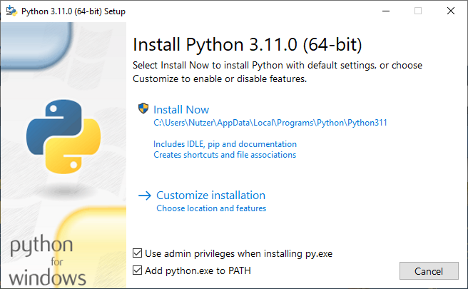
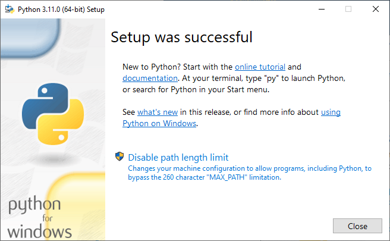
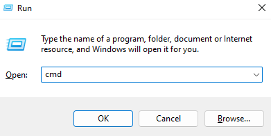

Chapter 1. Installation
Contents
Chapter 1. Installation#
Install Python (Windows)#
Go to https://www.python.org/downloads/:

Click the “Download” button (note that by the time you are reading this book the displayed Python version might be different). This will download an exe file. Start the exe file which will show a screen:

Note that its important that the “Add python.exe to PATH” is checked. If it is not, you need to check it yourself. This is needed so that Python will be found on your system later on when we execute commands.
After the installation is done, you should see the following:

Start a command line (Windows)#
Next we open a command line on our computer to execute the Python interpreter which will allow us to write and execute Python programs.
On Windows, you can open the command line by opening the “Run” window using Win + R, typing cmd and pressing the “Ok” button:

Alternatively you can type “cmd” into the search field. An app called “command prompt” should show up. Simply click the app and a CLI should open:

Next we type python in the command line to open a Python REPL (short for Read, Eval, Print, Loop) which allows you to interact with the Python interpreter.
Now type the following and hit Return (Enter):
print("Hello, World!")
# You should see the output below
# vvvvvvvvvvvvvvvvvvvvvvvvvvvvvvv
Hello, World!
The "Hello, World!" is a literal, which is a way to represent fixed value in code.
Congratulations! You just executed your first Python statement from the REPL. Whenever you wish to execute a statement in the REPL you need to type the statement and then hit Return (Enter).
Alternatively we could write this:
"Hello, World!"
'Hello, World!'
Note that there is a subtle difference between outputting something with print versus just writing it down. The print outputs the a user-readable value. However if we just write the value in the REPL, we get a representation of that value. You can already see that difference. If you look closely print("Hello, World!") outputs Hello, World!, whereas just writing 'Hello, World!' outputs 'Hello, World!' (note the single quotes).
We can also write scripts, which are files that contain code. Create a file named hello.py and write print("Hello, World!") into it. Then do the following from a command line:
python hello.py
This should again print Hello, World!.
If you are executing code from a script and you want to print values, you will always need to print them. Just writing the values down won’t work.
Comments#
Python has special statements called comments. These start with
#and are ignored by the interpreter:Comments are generally used to document what a piece of code is doing.